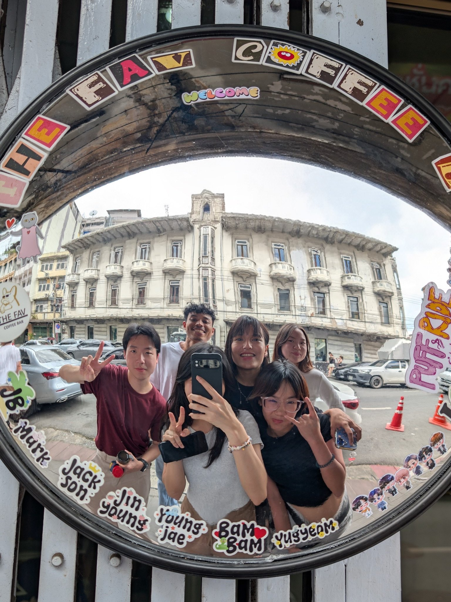

City Data + AI ecosystem จากประเทศไทย
Visualize City, Shape Tomorrow.
มองเห็นเมืองวันนี้ชัดขึ้น เพื่อร่วมสร้างวันพรุ่งนี้ที่ดีกว่า
Landometer เปลี่ยนข้อมูลเมืองที่กระจัดกระจาย ให้เป็นแผนที่ที่เข้าใจง่าย insight ที่ตรวจสอบที่มาได้ และเครื่องมือที่นำไปลงมือทำจริง — ครอบคลุมที่ดิน ทำเล และชีวิตเมือง
Land · Location · Living · Local Decisions
ที่มาของตัวเลข
LAND
ที่ดินและสิ่งปลูกสร้าง
ที่ดิน อาคาร และโครงสร้างพื้นฐาน — ฐานที่จับต้องได้ของทุกการตัดสินใจ
LOCATION
ทำเลและการเข้าถึง
ธุรกิจ การเดินทาง และการเข้าถึง — พลังของตำแหน่งที่ตั้ง
LIVING
ชีวิตเมือง
ผู้คน บริการ และความเป็นอยู่ — เมืองในมิติของคนที่ใช้มันจริง
ทั้งสามมิติมารวมกันเป็น Local Decisions — การตัดสินใจในพื้นที่จริง ที่วัดผลได้
ผลิตภัณฑ์และบริการ
เราสร้างเครื่องมือให้คนที่ต้องตัดสินใจเรื่องพื้นที่จริง — ตั้งแต่แปลงที่ดินแปลงเดียว ไปจนถึงทั้งเมือง
ใช้งานได้เลย
เริ่มด้วยการคุยกันก่อน
รู้จักย่าน รอบบ้าน รอบร้านเรา
เสียงจากผู้ใช้งานจริง
ต้นแบบแสดงอักษรย่อแทนรูปบุคคลและโลโก้ — ภาพบุคคลและเครื่องหมายของบริษัทเป็นของผู้อื่น จะใส่ของจริงเมื่อได้รับอนุญาตเป็นรายราย
ใช้งานง่าย รวบรวมข้อมูลหลายๆอย่างให้อยู่ในเว็บเดียว
ชอบมากค่ะ ใช้งานง่าย เราทำงานง่ายขึ้น ใช้เวลาน้อยลงมาก ในขณะที่ผลิตงานคุณภาพดีขึ้นมาก ทางทีม Landometer ยังพัฒนา app ทำให้มีฟีเจอร์ใหม่ๆ อยู่เสมอด้วยค่ะ
ธุรกิจพัฒนาบ้านจัดสรรและคอนโดอย่างเรา จำเป็นต้องสะสม Landbank ไว้พัฒนา Landometer.com ช่วยให้เราวางแผนการใช้งาน Landbank ได้มีประสิทธิภาพยิ่งขึ้น
Landometer.com เปิดโลกให้เราเห็นผลลัพธ์ของทุกความเป็นไปได้ ว่าจะถือครองที่ดินต่อ หรือนำไปทำอะไรจะได้ผลดีกว่ากัน ช่วยได้มากในยามที่มีประเด็นเรื่องภาษีที่ดินใหม่
พลอยมีที่ดินทั้งของบริษัท และของที่บ้าน พอได้ลองใช้ Portfolio ของ Landometer เห็นชัดเลย เพราะได้เปรียบเทียบที่ดินของเราทุกโฉนด ทั้งกระดานในคราวเดียว
ใช้งานได้ดีมาก ระบบหลังบ้านก็ให้คำแนะนำดี
CityMETER · Showcases
ข้อมูลพื้นที่สำหรับการตัดสินใจจริง
เปิดดูเมืองผ่านข้อมูล 38 มุมมอง — ที่ดินและอาคาร ธุรกิจและการเดินทาง ผู้คนและความเสี่ยง — แต่ละชุดบอกที่มา ขอบเขต และ “ควรรู้ก่อนใช้” ตรงตัวข้อมูล
showcase catalog · release v28 · ตรวจ 14 ส.ค. 2026
CityWiki
คู่มือย่าน ที่เขียนเหมือนคนท้องถิ่นเล่าให้ฟัง
CityWiki คือชุด guide ของย่านและสถานที่ ที่เขียนขึ้นจากข้อมูล CityMETER และการค้นคว้าที่ตรวจแหล่งได้ — ย่านนั้นเป็นอย่างไรจริง ๆ ควรไปแบบไหน และควรระวังอะไร
ณ 25 ส.ค. 2026
ควรรู้ก่อนใช้
Landom
ไม่ใช่สถานที่ แต่คือผู้คน
Landom คือชุมชนของคนที่ร่วมสร้าง Landometer — นักศึกษาฝึกงาน ทีมประจำ และผู้ร่วมพัฒนา ที่อยากเข้าใจเมืองและช่วยกันทำให้ดีขึ้น
ชาว Landom 51 คน · ผลงาน 120 ชิ้น · ใบรับรอง 26 ใบ
ณ 23 ส.ค. 2026
ทุกคนมีหน้าโปรไฟล์และผลงานที่ตามดูได้จริง · หลายคนในทีมประจำวันนี้ เริ่มต้นจากการฝึกงานกับเรา — ผลงานระหว่างฝึกคือใบเบิกทางที่จับต้องได้
Let us cultivate our city with data.
ถ้าฟอร์มเปิดไม่ได้ ติดต่อเราได้ที่ ช่องทางติดต่อ หรือ hello@landometer.com

เรื่องของเรา
Measure What Matters. Make It Actionable.
เราวัดสิ่งสำคัญ อธิบายว่าทำไมมันสำคัญ และช่วยให้คุณตัดสินใจก้าวต่อไปได้
ทำมาตั้งแต่ปี 2017 — เริ่มจาก “จัดการที่ดิน อย่างเห็นอนาคต”
เราทำงานแบบไหน
มาตรฐานหลักฐานของเรา
เรื่องเล่าและความเคลื่อนไหว
เรื่องล่าสุดจากทีมเรา — อัปเดตตรงจากช่องทางที่เราเล่าเป็นประจำ
Hello! มีอะไรให้เราช่วยบ้าง?
เล่าโจทย์ของคุณมาได้เลย — เราตอบกลับทางอีเมลที่ hello@landometer.com
Landometer Co., Ltd.
23/34-35 Room 4C-4D 4th Fl. The Quarter Bangkok Tower, ถนน ตรีมิตร แขวงตลาดน้อย เขตสัมพันธวงศ์ กรุงเทพมหานคร 10100

© 2017–2026 Landometer Co., Ltd.เนื้อหาบทความและ guide: CC BY-NC-ND 4.0 · โลโก้ เครื่องหมาย ภาพบุคคล หน้าจอผลิตภัณฑ์: สงวนสิทธิ์ · ชุดข้อมูล: สัญญาอนุญาตราย release (ร่างข้อเสนอ — รอยืนยัน)